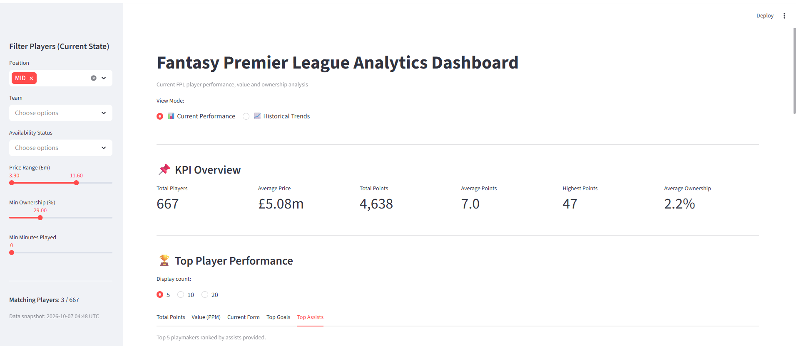
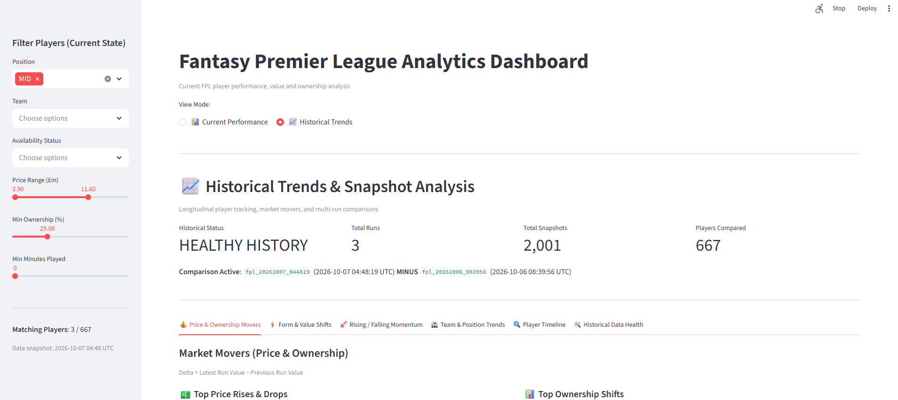
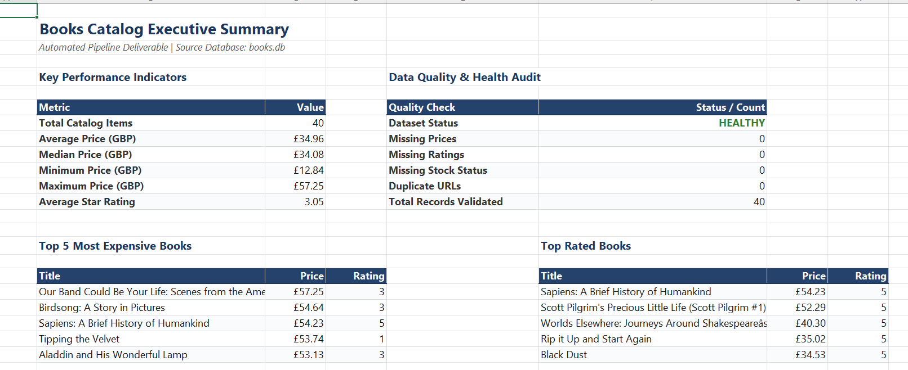
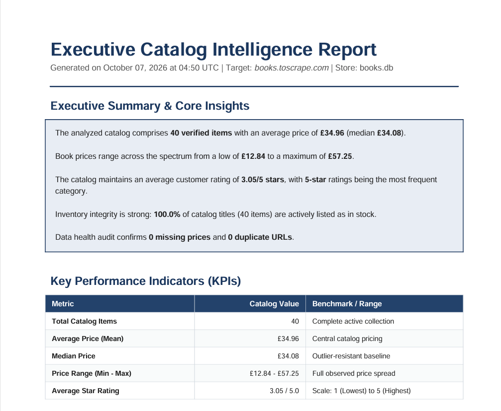
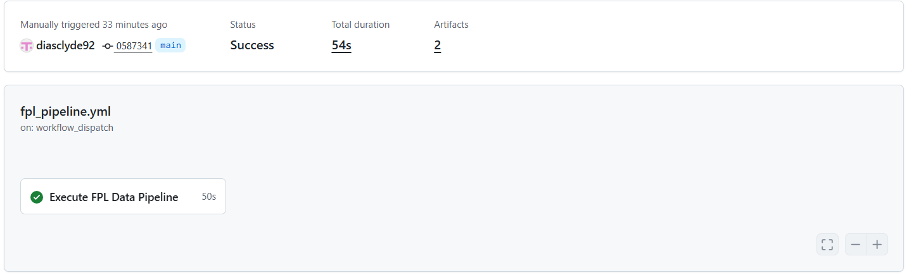

End-to-End Engineering Lifecycle
Demonstrating how external web and API sources progress through validation and storage into actionable business deliverables.
Integrated Data Lifecycle:
Books-to-Scrape Pipeline
A controlled web-scraping environment showcasing resilient crawling, pagination controls, and automated document generation.
- Multi-page HTML scraping with loop and cycle protection
- Raw HTML preservation on disk under timestamped run IDs
- Pydantic v2 schema validation isolating non-conforming items
- Relational persistence with SQLite atomic upserts
- Automated multi-sheet Excel deliverables and PDF executive briefs
Fantasy Premier League Pipeline
A real-world sports data pipeline monitoring dynamic player prices, ownership rates, and longitudinal momentum across 20 clubs.
- Direct REST ingestion from official FPL bootstrap API endpoint
- Dual persistence: live state table plus append-only historical snapshots
- Run-to-run delta calculation engine tracking market movements
- Interactive Streamlit dashboard presenting current & historical views
- Scheduled GitHub Actions workflow maintaining state across runs
Core Capabilities
Engineered with modular components enforcing strict separation of concerns.
Data Extraction
- Reusable HTTP client
- Exponential retries & timeouts
- Pagination loop protection
- HTML & API payload parsing
- Raw payload capture staging
Data Quality
- Pydantic v2 schema models
- Invalid record isolation
- SQLite constraint enforcement
- Duplicate upsert protection
- Historical snapshot integrity checks
Analytics & Reporting
- Vectorized Pandas engine
- Multi-tab Excel workbooks
- Publication-grade PDF briefs
- Streamlit web application
- Historical trend & delta analysis
Automation
- GitHub Actions workflow
- Scheduled daily cron runs
- Manual workflow dispatch
- Cross-run database restoration
- Historical snapshot accumulation
System Architecture
Unidirectional data flow separating extraction, validation, persistence, analytics, and presentation.
data/raw/<run_id>/Interactive FPL Dashboard
Built with Streamlit, consuming the underlying Pandas analytics layer with zero raw SQL in the UI.
Current FPL Performance
Explore current player valuations, fixture form, position filters, and budget efficiency.

Total players, average price, aggregate points, and league-wide ownership rates.
Dynamic filters for club, position, status, price range, and minimum minutes.
Interactive scatter plot identifying over-performing and budget-friendly assets.
Individual cards detailing clean sheets, assists, goals, and bonus points.
Historical FPL Trends
Longitudinal analysis across discrete pipeline runs comparing market movements and player progression.

Compare arbitrary historical execution runs or inspect latest vs. previous automated runs.
Ranked tables for top price rises/drops and percentage-point ownership shifts.
Chronological time-series charts tracing price, points, and ownership trajectories.
Automated verification verifying snapshot counts, run integrity, and schema health.
Automated Business Reporting
Generating polished, client-ready spreadsheet models and executive PDF briefs directly from persisted analytics.
Excel Analytics Report
Multi-worksheet workbook generated using openpyxl with executive styling, auto-filters, and native charts.

Summary, Books Data, Price Analysis, Rating Analysis, and Availability.
Navy corporate headers, freeze panes (A2), zebra striping, and currency formatting.
Native column charts illustrating catalog price spreads and star rating allocations.
Generates clean, descriptive sheets with intact headers even when data is empty.
Executive PDF Report
Publication-quality memorandum generated using ReportLab Platypus flowables with dynamic narrative insights.

Contextual English narrative synthesized on-the-fly from underlying metrics.
Embedded ReportLab vector drawings comparing top premium book prices.
NumberedCanvas providing dynamic running headers and "Page X of Y" footers.
Technical quality check verifying complete attributes and duplicate URL absence.
Automated Data Pipeline
Portfolio-grade scheduled execution via GitHub Actions with cross-run database preservation.

Runs automatically daily at 06:00 UTC via cron, with manual workflow_dispatch triggers.
Queries GitHub CLI for the latest successful run to restore fpl.db on fresh runners.
Appends new immutable snapshots and uploads the updated database artifact (30-day retention).
Preserves raw API JSON responses under fpl-raw-snapshot for auditing and backtesting.
Technology Stack
Engineered entirely in Python 3.12 with purpose-fit libraries and zero external frontend dependencies.
Engineering Highlights
Architectural decisions ensuring reliability, auditability, and maintainability.
• Reusable Architecture
Extraction, validation, storage, and analytics layers are decoupled. New data targets can be added without rewriting database or analytics logic.
• Separation of Analytics from UI
Neither the Streamlit dashboard nor the Excel/PDF reporters contain raw SQL. All metrics are computed by dedicated, testable Pandas engines.
• Typed Validation & Error Isolation
Pydantic v2 schemas enforce type constraints and domain boundaries. Invalid records are quarantined with diagnostic logs while valid records continue through the pipeline.
• Raw Data Preservation
Unparsed source responses (.html and .json) are saved to disk under timestamped run IDs before parsing, enabling compliance audits and re-processing without re-scraping.
• Immutable Historical Snapshots
Point-in-time statistics are appended under unique run IDs rather than overwritten, allowing longitudinal trend detection and player progression tracking.
• Graceful Empty-State Handling
Analytics, reporting, and dashboard components gracefully handle missing or empty datasets, displaying informative guidance rather than crashing with unhandled exceptions.
• Comprehensive Test Coverage
A suite of 107 deterministic tests validates HTTP retries, pagination traversal, schema boundaries, upserts, delta calculations, and workflow configuration.
• Stateful Continuity on Ephemeral Runners
GitHub Actions uses GitHub CLI queries to restore the previous database artifact, preserving historical multi-run continuity without maintaining a cloud database.
Verified Verification Results
Key proof points and verified execution metrics from the test suite and automated workflow.
* Proof points reflect verified project stages and deterministic test suite execution.
Engineering Limitations
Honest appraisal of technical trade-offs and current architectural scope.
- Public FPL Service Dependency External REST endpoint availability and response formats depend on the official Fantasy Premier League service.
- Workflow Artifacts vs. Production DB GitHub Actions artifacts model workflow state storage. A high-concurrency production SaaS would utilize a managed PostgreSQL database.
- Separately Run Streamlit Application The Streamlit dashboard is currently run locally or containerized rather than hosted as a public multi-tenant SaaS application.
- Controlled Demonstration Scraping Target Books-to-Scrape is a public testing sandbox without aggressive anti-bot defenses (CAPTCHAs/Cloudflare) which would require browser automation tools like Playwright.
Build automated data workflows that turn raw sources into usable business outputs.
This project demonstrates the architecture I use for data extraction, validation, analytics, reporting, dashboards, and scheduled automation.